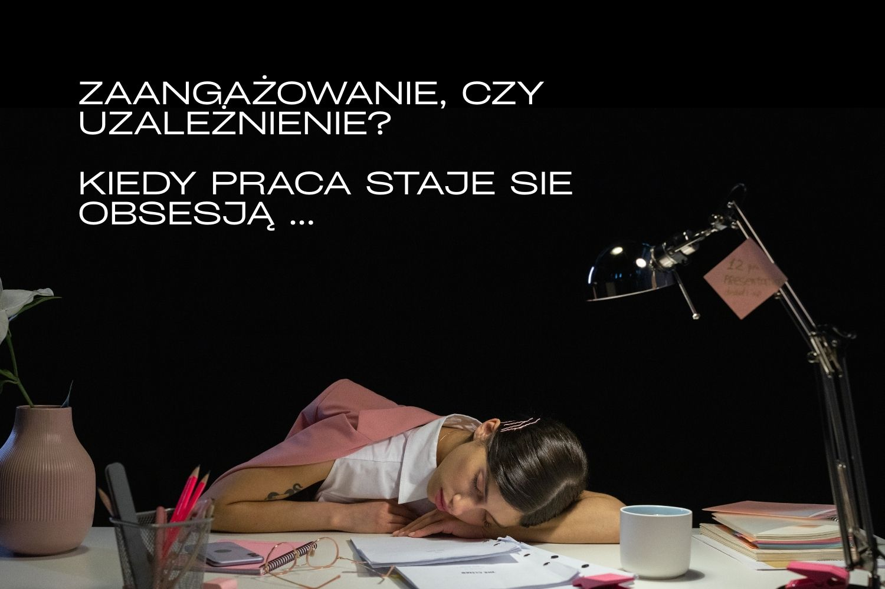

14 kwietnia 2025 · Justyna Siwek
Kiedy praca staje się obsesją…
Jeśli kobieta kupuje sporo butów nie musi być zakupoholiczką, jeśli lubimy sobie pograć na komputerze nie oznacza to uzależnienia od gier. W języku potocznym często nazywamy „uzależnieniem" coś, co jest nawykiem, przyzwyczajeniem. Ale jeśli dużo pracujemy – po czym poznać, czy już wpadliśmy w pułapkę pracoholizmu.
Warto więc od czasu do czasu zadać sobie kontrolnie pytania.
Jeśli odpowiedzi na te pytania są niepokojące, trzeba się zastanowić, czy nie zapędziliśmy się z pracą za daleko. Jest kilka kwestii, które pomogą to ustalić.
Kontrola – kto kontroluje sytuację, Ty, czy Twoja praca?
To, co powinno być niepokojące to kontrola, a raczej jej utrata. Dopóki kontrolujemy czas, zaangażowanie w daną czynność, dopóty możemy być spokojni. Jeśli jednak zaczynamy przeznaczać na pewne aktywności więcej czasu, niż byśmy chcieli, niż planowaliśmy, to już jest niepokojące. Szczególnie, jeśli praca zaczyna nam zabierać coraz więcej czasu i uwagi, trudno jest nam przestać to robić, a nawet kiedy przestajemy nadal o tym myślimy.
Czas – co tracimy przeznaczając więcej czasu na pracę?
Czas nie jest z gumy. Jeśli więcej pracujemy, to mamy mniej czasu dla rodziny, przyjaciół i na inne przyjemności. Paradoksalnie często nie odczuwamy tego braku, bo nasz mózg odcina nas od myślenia o nich, skupiając całą naszą uwagę na jednej uzależniającej aktywności tak, jakby nie było innych źródeł przyjemności. Dopiero kiedy porównamy nasz dzień, tydzień do tego jak było kiedyś możemy mieć refleksję, że zmiany poszły w dziwnym kierunku.
Satysfakcja – czy jeśli więcej pracuję jestem bardziej zadowolony z efektów?
Charakterystyczne dla uzależnień behawioralnych, czyli dotyczących zachowań, jest też odczuwanie coraz mniejszej przyjemności. Praca wcale nie przynosi pracoholikowi ogromnej radości, musi pracować więcej niż kiedyś, aby nie czuć się źle. Pracoholik często wręcz narzeka na swoją pracę, wcale nie jest ona jego pasją.
Konsekwencje – jak zaangażowanie w pracę wpływa na inne obszary naszego życia?
Ważne są konsekwencje, jakie nasze ryzykowne zachowania za sobą niosą. Mogą to być konflikty rodzinne, w które można wpaść, jeśli ktoś bliski zwróci uwagę typu „chyba za dużo pracujesz", bo uzależnieni niestety nie dostrzegają tego, a nawet angażują się dość mocno w ukrywanie lub bagatelizowanie sytuacji: „wszyscy teraz dużo muszą pracować". Takie błędy w postrzeganiu rzeczywistości dopadają każdego z nas, możemy coś wyolbrzymiać, lub pomniejszać, możemy dostrzegać nasz wpływ nawet tam gdzie go nie ma. Przy uzależnieniach te błędy niestety prowadzą nas na manowce.
Pracoholizm przynosi wiele negatywnych konsekwencji zdrowotnych, społecznych, ale w dłuższej perspektywie. Dlatego często trudno szybciej zorientować się, w czym tkwimy. W przypadku innych ryzykownych zachowań, mogą pojawiać się np. problemy finansowe, jeśli nasze granie kosztuje, albo co gorsza wkręciliśmy się w e-hazard, czy kryptohazard, albo kiedy nakupiliśmy wielu niepotrzebnych rzeczy, na które nas zwyczajnie nie stać. Te konsekwencje bywają trzeźwiące, ale ludzie są różni, więc dla różnych osób jest inna granica. Jedni zatrzymają się tracąc oszczędności, inni dopiero ockną się przy problemach ze spłatą długów, a jeszcze innych powstrzymać może jedynie rodzina wyeksmitowana ze sprzedawanego za długi domu. Konsekwencje mogą być więc poważne, ale problemem jest też, kiedy ich nie ma, albo nie są one tak dotkliwe. Skutki przepracowania nie są przyjemne, ale można dość długo je bagatelizować, rezultaty przewlekłego stresu, wypalenie zawodowe, problemy zdrowotne pojawiają się z czasem.
Czy od pracoholizmu można się uwolnić?
Tak dla porządku – w oficjalnych klasyfikacjach nie ma pracoholizmu, podobnie jak wielu innych kłopotliwych uzależnień behawioralnych, czyli związanych z zachowaniami, np. brakuje zakupoholizmu, nie ma też wielu najnowszych e-uzależnień – e-zakupoholizmu, kryptohazardu, uzależnienia od ekranów i mediów społecznościowych oraz związanych z nimi zjawisk jak FOMO (z ang. fear of missing out), czyli lęku przed ominięciem czegoś i nomofobii, czyli lęku przed utratą dostępu do telefonu. Te problemy jednak istnieją i dla osób, które się z nimi mierzą są całkiem realne. Na szczęście metody wspierania osób, które chcą się z nimi uporać istnieją, na bazie programów leczenia hazardu problemowego i uzależnienia od gier komputerowych można ułożyć plan terapii uwzględniający potrzeby konkretnej osoby, także biorąc pod uwagę specyfikę danego problemu.
Terapia pracoholizmu opiera się na zmianie naszego stosunku do pracy i powrotu do kontrolowania tej czynności. Bo tak jak w przypadku zakupoholizmu trudno rekomendować abstynencję od zakupów, przy cyber-problemach trudno odciąć się całkowicie od komputera i smartfonu, to w przypadku pracoholizmu nie można przestać całkowicie pracować. Trzeba jednak odzyskać kontrolę nad tymi zachowaniami, umieć je skutecznie ograniczyć, zastąpić innymi, pożytecznymi i, co najważniejsze, zmierzyć się z problemami i głęboko tkwiącymi przekonaniami, które je wywołały. Bo wszelkie „holizmy" to tylko objawy.
Podejrzewasz u siebie (lub bliskiej osoby) pracoholizm? Ustal z czego wynika taki pęd do pracy zadając kilka pytań.
To pomoże ustalić, czy zaangażowanie w pracę nie wynika z czegoś zupełnie innego, niż potrzeba zarabiania i realizacji naszych planów dot. własnej kariery.
Pracoholizm, chociaż wydaje się z pozoru prosty w diagnozie ma często bardzo złożone przyczyny, tkwiące głęboko w naszych przekonaniach o sobie, innych ludziach i o świecie. Może być wynikiem naszych doświadczeń z dzieciństwa, może stać się też sposobem na zaspokojenie potrzeby uznania, akceptacji. Często łączy się z perfekcjonizmem, niskim lub niepewnym poczuciem własnej wartości, syndromem oszusta, a także niezdolnością do odpoczynku, którego trzeba się nauczyć.
I jeszcze jedno, pracoholizm nie musi dotyczyć tylko pracy zarobkowej. Nasze pracoholiczne zachowania mogą też objawiać się w pracach domowych. Warto również to mieć na uwadze, jeśli dopadnie nas zmęczenie z przepracowania wywołanego przygotowywaniami do świąt.